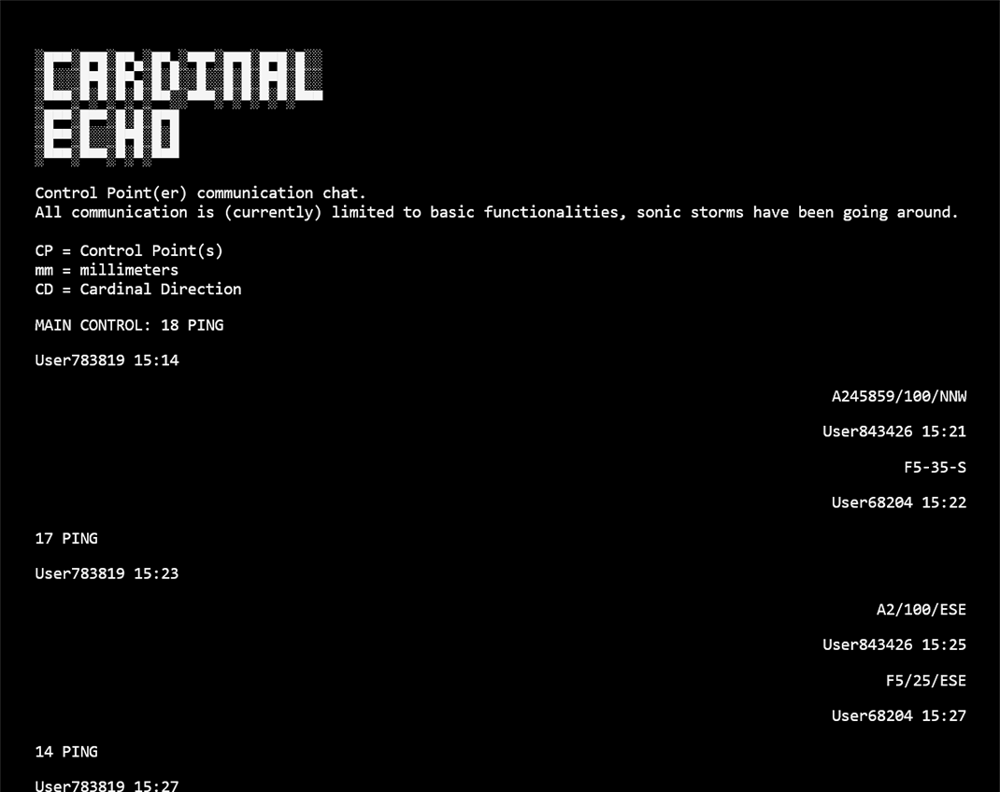

interactive roleplaying game
Humanity has no reason to stay on the surface, in fact they are barely able to do so. Noise pollution has ruined any prolonged stay, the only silence can be found underground.
Cardinal Echo is an interactive experience dealing with isolation and slow communication. How will we communicate with one another, when our technology is sending small amounts of information, one ping at a time?
